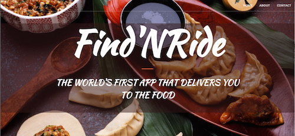

Find'NRide:
Whatever your hunger, we provide the information to get you there
[Web Development] [Django] [Postgres] [Heroku] [Javascript]
 See the working web application here!Actively involved in the entire fullstack development processes. Specifically tackled Django integration and Uber and Google APIs.
Our team was given the freedom to build a RESTful web application using current web technologies. We were all motivated by the idea of creating a platform that integrated mobility in a city with fast querying abilities. After deliberation on how to scope our project, we decided to build a tool that queried for food options. Our team developed the "Find and Ride" app which enables users to locate nearby restaurants and/or Yelplisted establishments and provides taxi transportation prices (Uber) to those destinations via a mapbased (Google) interface.
For a number of reasons, Django was used as the framework for our application. It was used in order to leverage the framework’s builtin features, such as its URL routing and forms API, which included field validations. In addition, Django made it especially easy to specify app models and to configure it with our SQLbased database, PostGres. Using a Djangobased framework also allowed the team to work independently and develop the site with a modular infrastructure. Each member was able to instantiate their own application, from which other apps could import and borrow models, page templates, and views (logical classes written in Python) from one another person's application within the same Django project, all in a compact and complete manner. We deployed our web application to Heroku so that it could be hosted publicly on the web. It compelled our team to control the project's environment across different machines, which could vary widely in base configurations and setups, in a disciplined and sanitary manner. In order to successfully deploy the app to Heroku, our team had to install new project dependencies and complete development within a virtual environment. In addition, we connected the Heroku application to our Github repository so that upon any new commits by team contributors to the repository's master branch, it redeployed the web application, including installing any new project dependencies on the production server. Finally, we hosted our PostgreSQL database on Heroku, using the Heroku Postgres service, which made it simple for the web application to interact with the database live on the web. We configured a PostgreSQL database as a persistent data source for storing and retrieving the short and long URLs. PostgreSQL was used as a learning experience, for gaining practice with (1) setting up a local instance of the database, (2) syncing the database with the Django project (via preparing and making database migrations), and (3) backing up and pushing the local database to the live instance on Heroku. Our project did not leverage the full power of a PostgreSQL database (e.g., PostGIS and JSON schemas), but we look forward to implementing these capabilities in the future.
In terms of other APIs, Google Maps and Uber APIs were selected for their comprehensiveness and easy integration. There are various modules of Google Maps API that we have incorporated in our application. To begin with, the application tries to access the user’s location in two ways either the user can allow Google Maps API to directly derive his/her location based on the user’s IP address, or the user can input his/her location into the “Search Location” textbox. While the user enters his/her location in the “Search Location” text box, we use the AutoComplete module of Google Maps to predict the possible addresses that matches user query in the Google Maps database. The Google Maps API then retrieves the user’s location using its GeoCoder module. The results from the GeoCoder module is used to map the user’s location on the map using the Marker module. The Yelp API returns, in JSON, the ten closest establishments based on keyword matches from user input. It also returns various attributes of the establishments present in the Yelp database like location of the establishments, ratings, phone number and Yelp URL. These results are sent both to the Google Maps (so that it can plot these establishments on the map) and the Uber (so that it can get the taxi fare estimate from user’s current location to each of these establishments) APIs. The way the Uber API works is that it takes in origin latitude and end latitude and posts the time, type of Uber vehicle, and price. The process to hit ten different locations is slow, as each call to Uber needs to be made separately. Once it has the Uber fare estimate for all the 10 locations, it sends it back to Google Maps API for display.
By the end of the project, we created a fully functioning application that integrated all of the aforementioned technologies onto a Heroku server. The motivation for our prototype was to build a seamless and intuitive web application for searching food and finding the best route. As can be viewed in our demo, the landing page takes the user to an introductory page—who are we and what can you hope to expect from our service? The following page provides a simple user experience of inputting a single keyword. Using the Yelp API, our web application matches you with the ten closest spots with that keyword food item. The Google API provides the directions and the Uber API makes the process even simpler. One word gets you the what, the where, the how, and the when.
Different team members worked on different APIs with the hope of integrating the technologies during the final stage. However, working in JavaScript vs Python made sending data incompatible in certain situations. One of the takeaways of this project was to streamline the technologies used and communicate regularly. This proved especially true for our work with these three different APIs. Google Maps API is designed to be used using Javascript. While Uber and Yelp are being called from the server backend. The biggest challenge we faced was to call the Google API to get geographic coordinates and then send it to Yelp API. But since Google API works on the client side JS while Yelp works on server side python code, we were having difficulty passing the coordinates from Google API to Yelp API and then get the results back from Yelp to Google. We decided on making an AJAX call from the JS to the server, but again we did not want to reload the page and hence did not want to send an HTML response back from the server. In the end we ended up taking the coordinates from the Google API, making an AJAX call to the server, passing the coordinates to the Yelp API, obtaining the response from Yelp, converting it to JSON, returning it to the client side and using JS to plot the results on the map. This was a longer work around as we were working on different technologies, but we managed to make them work together.
Overall this project was a great learning experience in that it involved work from the backend to the frontend. From the non-technical side it also involved insight into the user experience. Future work could involve adding bicycle, foot, and bus routes. Also, the App could give the functionality to include search in other areas and not just the nearby locations. Different categories of Uber fares could be included (X, XL, Black etc.). We would have liked to also include the functionality that would allow users to save their searches and favorite places. Based on the saved places, the App would then suggest similar restaurants to the user. More work to come!
Group Members: Brian Goodness, Keshav Potluri, Richa Prajapati
See the working web application here! home{kind=link}
{kind=link}
{kind=link}
{kind=link}
{kind=link}